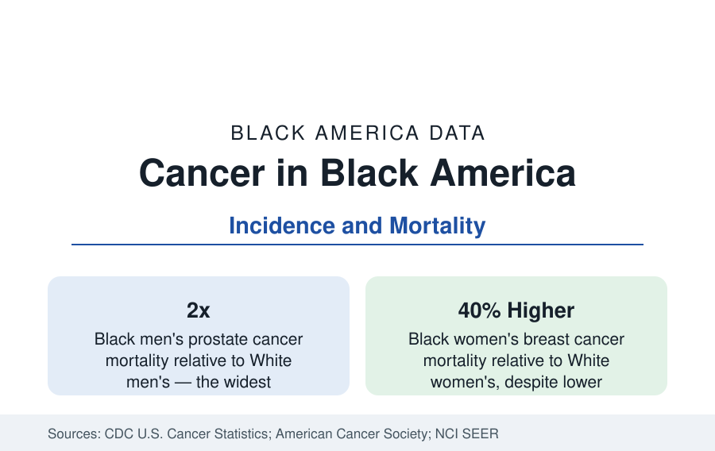

Black Public Health
Cancer Among Black Americans: Incidence and Mortality
Black Americans develop cancer at rates near the national figure but die from it at higher rates — with the widest gaps in prostate and breast cancer. The CDC and American Cancer Society data.

Cancer is the second-leading cause of death for Black Americans, and its statistics hold the public health section's most instructive paradox: Black Americans are diagnosed with cancer at overall rates close to — and in the most recent data slightly below — those of White Americans, yet die from cancer at rates clearly higher. The gap is not uniform across cancers: it is modest for some, absent for others, and for two of the most common cancers — prostate and breast — it is the widest in American medicine. This article reports the incidence and mortality data from the federal registries and the American Cancer Society.
How Cancer Is Counted
Cancer statistics come from registries, not surveys: state registries reporting to the CDC and the National Cancer Institute's SEER program record essentially every diagnosed case in their catchment areas, with incidence (new cases) and mortality (deaths) expressed per 100,000 people and age-adjusted to a standard population. The two series answer different questions. Incidence measures how much cancer a population develops; mortality measures how much it dies of — a function of incidence, of the cancer's biology, of the stage at which it is found, and of the treatment received. Racial gaps in mortality that exceed gaps in incidence therefore point, arithmetically, to stage and treatment — the care pathway — as the territory where the difference is made.
Prostate Cancer: The Widest Gap
Prostate cancer is the extreme case in the data. Black men develop prostate cancer at roughly 1.7 times the rate of White men — the highest incidence of any population in the world in the published comparisons — and die from it at roughly twice the White rate. The excess begins earlier: Black men's diagnoses come younger on average, and their tumors are more likely to be aggressive at presentation. Genetic susceptibility, documented in ancestry studies, interacts with screening patterns — the prostate-specific antigen testing debates of the past decades fell differently on a population at elevated baseline risk — and with treatment access after diagnosis. Prostate cancer alone accounts for a substantial share of the overall Black male cancer mortality gap, which is why it anchors this article and its screening coverage elsewhere in this section.
Breast Cancer: Lower Incidence, Higher Mortality
Breast cancer presents the paradox in its purest form. Black women are diagnosed at rates slightly below White women — historically about 5 to 10 percent lower — yet die from breast cancer at rates roughly 40 percent higher. The registry data decompose the difference: Black women's cancers are found at later stages on average; they are substantially more likely to be triple-negative, an aggressive subtype with fewer targeted treatments, a biological pattern linked to West African ancestry; and treatment timelines and completion rates differ measurably in the care data. Mammography rates, by contrast, are similar between the groups in the survey data — the gap opens after screening, in diagnostic follow-up, stage distribution, subtype, and treatment, which is where the mortality difference is manufactured.
Colorectal, Lung, and the Remaining Map
Colorectal cancer records both higher incidence and higher mortality for Black Americans — on the order of 15 to 20 percent higher incidence and roughly a third higher mortality — with screening colonoscopy rates and follow-up of abnormal results the documented pressure points, and with onset young enough that screening guidelines have lowered the starting age for everyone. Lung cancer, the largest cancer killer, has converged dramatically: Black men's once-much-higher rates have fallen toward White rates with declining smoking, and the remaining gap is smaller than the others in this article. Cervical cancer mortality remains roughly twice as high for Black women despite being among the most preventable cancers on the list. Liver, stomach, and multiple myeloma — a blood cancer whose incidence in Black Americans runs at twice the national figure — complete a map in which the excess mortality concentrates in cancers that are screenable, treatable, or both.
Survival and the Direction of the Data
Five-year relative survival for all cancers combined trails the White figure by roughly ten percentage points in the SEER data — the composite of the stage, subtype, and treatment effects above. The trend, however, is one of the longest improvements in this reference: the overall Black cancer mortality rate has fallen substantially across three decades, faster in percentage terms than the White rate, so that the mortality gap — which peaked in the early 1990s at roughly a third higher — has narrowed to its current level, closer to a tenth higher overall, even as the prostate and breast gaps remain near their widest. Smoking decline, screening diffusion, and treatment advances drive the aggregate improvement in the analyses; the cancers that resist the trend define the research and access agenda.
Summarized: incidence near parity, mortality in excess — twice the prostate deaths, 40 percent more breast cancer deaths, a third more colorectal deaths — narrowing overall for thirty years and stubborn exactly where early detection and treatment quality decide. Cancer is the section's clearest demonstration that in modern American medicine, the distribution of outcomes is made less by who gets sick than by what happens next.
More in Black Public Health
Hypertension Among Black Adults: Prevalence, Control, and Consequences
About 55 percent of Black adults have hypertension — the highest rate of any U.S. group. Prevalence, onset, control, and the stroke, heart, and kidney consequences in the data.
Diabetes Among Black Adults: Prevalence and Complications
Nearly one in five Black adults has diabetes, diagnosed or undiagnosed — and its complications fall with particular weight. The CDC data on prevalence, control, and outcomes.
Black Life Expectancy: The Gap at Birth and Its Causes
Black life expectancy at birth is about 73 years, roughly five years below the national figure — the summary measure of every health gap in this section. The CDC data.
Source: CDC, United States Cancer Statistics; American Cancer Society, Cancer Facts & Figures for African Americans; National Cancer Institute SEER Program.